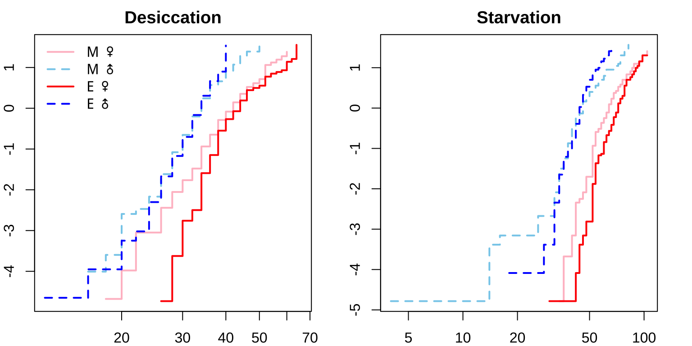
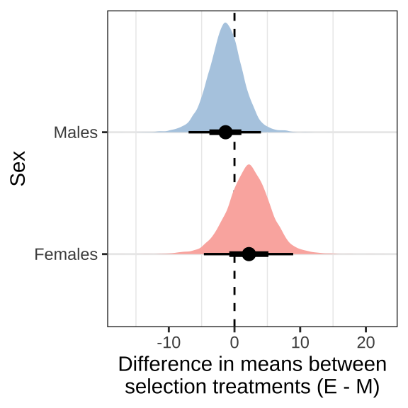
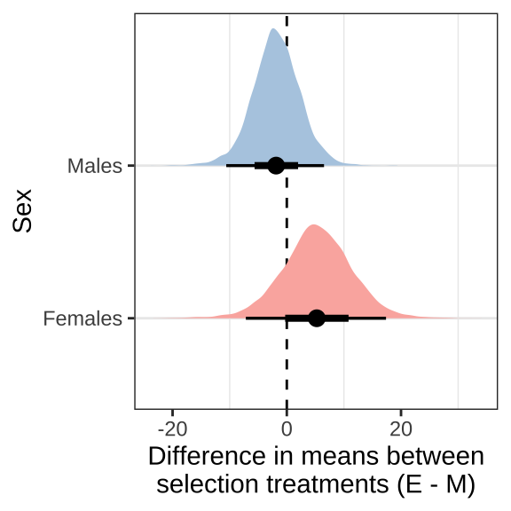
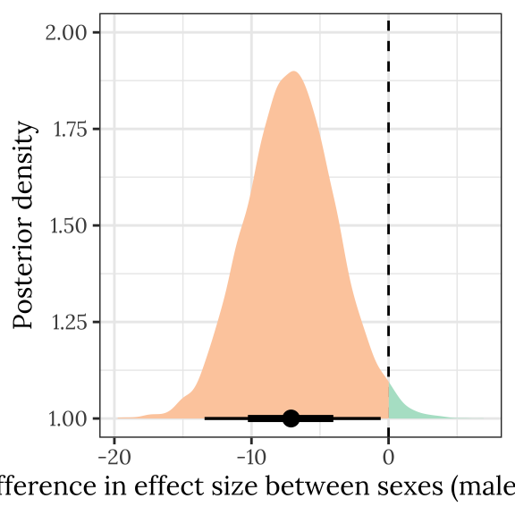

Desiccation and starvation resistance
Last updated: 2021-03-12
Checks: 7 0
Knit directory: exp_evol_respiration/
This reproducible R Markdown analysis was created with workflowr (version 1.6.2). The Checks tab describes the reproducibility checks that were applied when the results were created. The Past versions tab lists the development history.
Great! Since the R Markdown file has been committed to the Git repository, you know the exact version of the code that produced these results.
Great job! The global environment was empty. Objects defined in the global environment can affect the analysis in your R Markdown file in unknown ways. For reproduciblity it’s best to always run the code in an empty environment.
The command set.seed(20190703) was run prior to running the code in the R Markdown file. Setting a seed ensures that any results that rely on randomness, e.g. subsampling or permutations, are reproducible.
Great job! Recording the operating system, R version, and package versions is critical for reproducibility.
Nice! There were no cached chunks for this analysis, so you can be confident that you successfully produced the results during this run.
Great job! Using relative paths to the files within your workflowr project makes it easier to run your code on other machines.
Great! You are using Git for version control. Tracking code development and connecting the code version to the results is critical for reproducibility.
The results in this page were generated with repository version f7b49ff. See the Past versions tab to see a history of the changes made to the R Markdown and HTML files.
Note that you need to be careful to ensure that all relevant files for the analysis have been committed to Git prior to generating the results (you can use wflow_publish or wflow_git_commit). workflowr only checks the R Markdown file, but you know if there are other scripts or data files that it depends on. Below is the status of the Git repository when the results were generated:
Ignored files:
Ignored: .DS_Store
Ignored: .Rhistory
Ignored: .Rproj.user/
Ignored: figures/.DS_Store
Ignored: output/.DS_Store
Untracked files:
Untracked: data/1.eclosion_wide.csv
Untracked: figures/desiccation.pdf
Untracked: figures/eclosion.pdf
Untracked: figures/metaboliteDAG.pdf
Untracked: figures/metabolite_plotCONTROLLED.pdf
Untracked: figures/metabolites_supp.pdf
Untracked: figures/respirationDAG.pdf
Untracked: figures/respiration_figure_noRQ.pdf
Untracked: figures/starvation.pdf
Untracked: output/stress_medians.csv
Unstaged changes:
Modified: figures/metabolite_interaction_plot.pdf
Modified: figures/metabolite_pairs_plot.pdf
Modified: figures/metabolite_plot.pdf
Modified: figures/respiration_figure.pdf
Modified: figures/respiration_pairs_plot.pdf
Modified: output/cox_brms.rds
Deleted: output/coxmod.rds
Deleted: output/coxmod_dropINT.rds
Deleted: output/coxmod_dropSEX.rds
Deleted: output/coxmod_dropTRT.rds
Note that any generated files, e.g. HTML, png, CSS, etc., are not included in this status report because it is ok for generated content to have uncommitted changes.
These are the previous versions of the repository in which changes were made to the R Markdown (analysis/resistance.Rmd) and HTML (docs/resistance.html) files. If you’ve configured a remote Git repository (see ?wflow_git_remote), click on the hyperlinks in the table below to view the files as they were in that past version.
| File | Version | Author | Date | Message |
|---|---|---|---|---|
| Rmd | f7b49ff | MartinGarlovsky | 2021-03-12 | wflow_publish(c(“analysis/juvenile_development.Rmd”, “analysis/resistance.Rmd”, |
| html | ffb09dd | MartinGarlovsky | 2021-02-08 | Build site. |
| Rmd | 1b92046 | MartinGarlovsky | 2021-02-08 | wflow_publish(c(“analysis/juvenile_development.Rmd”, “analysis/resistance.Rmd”, |
| html | 8000504 | Martin Garlovsky | 2021-01-19 | Build site. |
| Rmd | 7bf6463 | Martin Garlovsky | 2021-01-19 | wflow_publish(“analysis/resistance.Rmd”) |
| html | 709456c | Martin Garlovsky | 2021-01-18 | Build site. |
| Rmd | c2d846f | Martin Garlovsky | 2021-01-18 | wflow_publish(c(“analysis/juvenile_development.Rmd”, “analysis/resistance.Rmd”, |
| html | 037f2fc | lukeholman | 2020-12-18 | Build site. |
| Rmd | 5c3ec4e | lukeholman | 2020-12-18 | new title |
| html | 41d232f | lukeholman | 2020-12-18 | Build site. |
| html | 6861115 | lukeholman | 2020-12-18 | Build site. |
| html | 0d5bcc9 | lukeholman | 2020-12-18 | Build site. |
| html | 989e86f | lukeholman | 2020-12-18 | Build site. |
| Rmd | 96d1188 | Martin Garlovsky | 2020-12-13 | MDG commit |
| html | 96d1188 | Martin Garlovsky | 2020-12-13 | MDG commit |
| Rmd | 7d4b609 | Martin Garlovsky | 2020-12-05 | MDG commit |
| html | 7d4b609 | Martin Garlovsky | 2020-12-05 | MDG commit |
| Rmd | 8e1e5c1 | Martin Garlovsky | 2020-12-04 | MDG commit again |
| html | 8e1e5c1 | Martin Garlovsky | 2020-12-04 | MDG commit again |
| html | 287d75b | Martin Garlovsky | 2020-12-04 | MDG commit |
| html | 45751bf | Martin Garlovsky | 2020-12-04 | MDG commit |
| Rmd | c175be4 | Martin Garlovsky | 2020-12-04 | MDG commit |
| html | c175be4 | Martin Garlovsky | 2020-12-04 | MDG commit |
| html | df61dde | Martin Garlovsky | 2020-12-04 | MDG commit |
| Rmd | 0714753 | Martin Garlovsky | 2020-12-04 | workflowr::wflow_git_commit(all = T) |
| Rmd | 3fdbcb2 | lukeholman | 2020-11-30 | Tweaks Nov 2020 |
Load packages
library(tidyverse)
library(coxme)
library(brms)
library(tidybayes)
library(ggridges)
library(kableExtra)
library(knitrhooks) # install with devtools::install_github("nathaneastwood/knitrhooks")
library(showtext)
output_max_height() # a knitrhook option
options(stringsAsFactors = FALSE)
# set up nice font for figure
nice_font <- "Lora"
font_add_google(name = nice_font, family = nice_font, regular.wt = 400, bold.wt = 700)
showtext_auto()Load data
# load desiccation resistance data
DesRes <- read.csv("data/3.DesRes.csv") %>%
# add event (all flies died)
mutate(EVENT = 1,
LINE = paste0(Treatment, substr(Replicate, 2, 2)),
ID = paste(LINE, Vial, sep = ''))
# calculate survival times
# paste time and date
DesRes$d <- paste(DesRes$Death_date, DesRes$Death_time, sep = ' ')
# experiment start time
start_timeDes <- "04/02/2017 12:00"
DesRes$survival.time <- as.numeric(strptime(DesRes$d, format = "%d/%m/%Y %H") - strptime(start_timeDes, format = "%d/%m/%Y %H"))
# load starvation resistance data
StaRes <- read.csv("data/3.StarvRes.csv") %>%
# add event (all flies died)
mutate(EVENT = 1,
LINE = paste0(Treatment, substr(Replicate, 2, 2)),
ID = paste(LINE, Vial, sep = ''))
# calculate survival times
# paste time and date
StaRes$d <- paste(StaRes$Death_date, StaRes$Death_time, sep = ' ')
# experiment start time
start_timeSta <- "04/02/2017 12:00"
StaRes$survival.time <- as.numeric(strptime(StaRes$d, format = "%d/%m/%Y %H") - strptime(start_timeSta, format = "%d/%m/%Y %H"))
# 5 individuals have missing survival times which we will right censor at max. survival time
# Two M females (M2) were right censored as survival time not recorded
# Three P females (P2 Vial 6 and P4 vial 9) were right censored as survival time not recorded
StaRes[which(is.na(StaRes$survival.time)), 'EVENT'] <- 0
StaRes[which(is.na(StaRes$survival.time)), 'survival.time'] <- max(na.omit(StaRes$survival.time))Inspecting the raw data
bind_rows(
DesRes %>%
select(Treatment, Sex, survival.time) %>% mutate(var = 'Desiccation'),
StaRes %>% filter(EVENT == 1) %>%
select(Treatment, Sex, survival.time) %>% mutate(var = 'Starvation')
) %>%
mutate(var2 = paste(Treatment, Sex)) %>%
ggplot(aes(x = survival.time, y = Sex, fill = var2)) +
geom_boxplot() +
scale_fill_manual(values = c("pink", "skyblue", "red", "blue"), name = "",
labels = c('Monogamy Females', 'Monogamy Males',
'Polandry Females', 'Polandry Males')) +
labs(x = 'Survival time (hours)') +
facet_wrap(~var, ncol = 2) +
theme_bw() +
NULL
Figure 1: Survival time in hours for flies in each treatment split by sex.
Survival analysis
We modeled desiccation and starvation resistance using survival analysis. We measured time in hours until death (EVENT = 1) for single sex triads of flies housed in vials (n = 7-10 vials per replicate per sex) containing no media and silica gel beads between the cotton and Parafilm enclosing the vial (desiccation resistance) or an agar media providing moisture only (starvation resistance). We monitored vials for deaths every two hours until all flies perished. For the starvation resistance assay five individuals (two M females and three E females) were right censored (EVENT = 0) at the end of the observation period as death times were not recorded or remained alive.
Kaplan-Meier survival curve
First we plot Kaplan-Meier survival curves.
survminer::ggsurvplot(survfit(Surv(survival.time, EVENT) ~ Treatment + Sex, data = DesRes),
conf.int = TRUE,
risk.table = FALSE,
linetype = "Sex",
palette = c("pink", "skyblue", "red", "blue"),
xlab = "Time (hours)",
legend = 'right',
legend.title = "",
legend.labs = c("M \u2640","M \u2642",
'E \u2640','E \u2642'),
break.time.by = 12,
ggtheme = theme_bw()) 
#ggsave(filename = 'figures/desiccation.pdf', width = 5.5, height = 5, dpi = 600, useDingbats = FALSE)
survminer::ggsurvplot(survfit(Surv(survival.time, EVENT) ~ Treatment + Sex, data = StaRes),
conf.int = TRUE,
risk.table = FALSE,
linetype = "Sex",
palette = c("pink", "skyblue", "red", "blue"),
xlab = "Time (hours)",
legend = 'right',
legend.title = "",
legend.labs = c("M \u2640","M \u2642",
'E \u2640','E \u2642'),
break.time.by = 12,
ggtheme = theme_bw()) 
#ggsave(filename = 'figures/starvation.pdf', width = 5.5, height = 5, dpi = 600, useDingbats = FALSE)Figure 2: Kaplan-Meier survival curves for flies in each treatment split by sex. + indicates censored individuals (n = 5).
Median survival times
bind_rows(
summary(survfit(Surv(survival.time, EVENT) ~ Treatment + Sex, data = DesRes))$table %>%
as_tibble() %>%
mutate(Treatment = c('M', 'M', 'E', 'E'),
Sex = c('Female', 'Male', 'Female', 'Male')),
summary(survfit(Surv(survival.time, EVENT) ~ Treatment + Sex, data = StaRes))$table %>%
as_tibble() %>%
mutate(Treatment = c('M', 'M', 'E', 'E'),
Sex = c('Female', 'Male', 'Female', 'Male'))) %>%
mutate(`Median (± 95% CI)` = paste0(median, ' (', `0.95LCL`, '-', `0.95UCL`, ')')) %>%
dplyr::select(Treatment, Sex, N = records, `N events` = events, `Median (± 95% CI)`) %>%
#write_csv('output/stress_medians.csv')
kable() %>%
kable_styling(full_width = FALSE) %>%
group_rows("Desiccation", 1, 4) %>%
group_rows("Starvation", 5, 8)| Treatment | Sex | N | N events | Median (± 95% CI) |
|---|---|---|---|---|
| Desiccation | ||||
| M | Female | 108 | 108 | 38 (38-42) |
| M | Male | 111 | 111 | 32 (32-34) |
| E | Female | 114 | 114 | 40 (38-42) |
| E | Male | 105 | 105 | 32 (32-34) |
| Starvation | ||||
| M | Female | 120 | 118 | 57 (52-62) |
| M | Male | 120 | 120 | 40 (38-44) |
| E | Female | 120 | 117 | 66 (62-70) |
| E | Male | 120 | 120 | 42 (40-42) |
Check proportional hazards assumption
Next we need to check that the proportional hazards assumption is not violated before fitting the model, where crossing hazards (lines) indicate violation of the proportional hazards assumption. For both desiccation and starvation we see crossing hazards for the male survival curves. We therefore fit accelerated failure time (AFT) models with a Weibull distribution (see here).
# assess proportional hazards assumption
par(mar = c(2, 2, 2, 2), mfrow = c(1, 2))
plot(survfit(Surv(survival.time, EVENT) ~ Treatment + Sex, data = DesRes),
lty = 1:2, lwd = 2,
col = c("pink", "skyblue", "red", "blue"),
main = 'Desiccation',
fun = "cloglog")
legend("topleft", c("M \u2640","M \u2642",'E \u2640','E \u2642'),
col = c("pink", "skyblue", "red", "blue"),
lty = 1:2,
lwd = 2,
bty = 'n'
)
plot(survfit(Surv(survival.time, EVENT) ~ Treatment + Sex, data = StaRes),
lty = 1:2, lwd = 2,
col = c("pink", "skyblue", "red", "blue"),
main = 'Starvation',
fun = "cloglog")
par(mfrow = c(1, 1))Fit the survival models for desiccation and starvation resistance
We fit an accelerated failure time model in brms using family = weibull(), with time (hours) to event (death) as the response and sexual selection treatment (Treatment; Monogamy or Elevated polyandry), Sex (female or male) and their interaction as predictors. See here for a helpful explanation on fitting survival models in brms. We also include replicate treatment as a random intercept term for each of the 8 lines and a random slope term to allow the effect of selection treatment to vary across replicate lines. We also include vial ID as a random intercept term as individuals housed in the same vial may show a correlated response.
if(!file.exists("output/des_brm.rds")){ # if the model doesn't exist fit it, else load it
des_brm <- brm(survival.time | cens(1 - EVENT) ~ Treatment * Sex + (Treatment|LINE) + (1|ID),
prior = c(set_prior("normal(0,0.5)", class = "b"),
set_prior("cauchy(0,0.1)", class = "sd")),
iter = 5000, chains = 4, cores = 4,
control = list(max_treedepth = 20,
adapt_delta = 0.999),
data = DesRes, family = weibull())
saveRDS(des_brm, "output/des_brm.rds")
} else {
des_brm <- readRDS('output/des_brm.rds')
}
if(!file.exists("output/sta_brm.rds")){ # if the model doesn't exist fit it, else load it
sta_brm <- brm(survival.time | cens(EVENT) ~ Treatment * Sex + (Treatment|LINE) + (1|ID),
prior = c(set_prior("normal(0,0.5)", class = "b"),
set_prior("cauchy(0,0.1)", class = "sd")),
iter = 5000, chains = 4, cores = 4,
control = list(max_treedepth = 20,
adapt_delta = 0.999),
# brm uses 0 = event, 1 = censor so need to recode
data = StaRes %>% mutate(EVENT = if_else(EVENT == 1, 0, 1)),
family = weibull())
saveRDS(sta_brm, "output/sta_brm.rds")
} else {
sta_brm <- readRDS('output/sta_brm.rds')
}Table of model parameter estimates - eclosion time
Formatted table
Taking the exponent of the coefficients gives an estimate of the multiplicative effect of the time to event compared to baseline (Monogamy females) (see here). For instance, for desiccation resistance, being male accelerates time to event by a factor of exp(-0.167) = 0.847 (95% confidence intervals = 0.795 - 0.902), i.e. Monogamy males live 0.847 times as long as Monogamy females.
des_test <- bind_rows(
hypothesis(des_brm, 'TreatmentP = 0')$hypothesis,
hypothesis(des_brm, 'Sexm = 0')$hypothesis,
hypothesis(des_brm, 'TreatmentP:Sexm = 0')$hypothesis
) %>%
mutate(Parameter = c('Treatment (E)', 'Sex (M)', 'Treatment (E) x Sex (M)'),
across(2:5, round, 3)) %>%
relocate(Parameter, Estimate, Est.Error, CI.Lower, CI.Upper, Star)
sta_test <- bind_rows(
hypothesis(sta_brm, 'TreatmentP = 0')$hypothesis,
hypothesis(sta_brm, 'Sexm = 0')$hypothesis,
hypothesis(sta_brm, 'TreatmentP:Sexm = 0')$hypothesis
) %>%
mutate(Parameter = c('Treatment (E)', 'Sex (M)', 'Treatment (E) x Sex (M)'),
across(2:5, round, 3)) %>%
relocate(Parameter, Estimate, Est.Error, CI.Lower, CI.Upper, Star)
des_pvals <- bayestestR::p_direction(des_brm) %>%
as.data.frame() %>%
mutate(vars = map_chr(str_split(Parameter, "_"), ~ .x[2]),
p_val = 1 - pd,
star = ifelse(p_val < 0.05, "\\*", "")) %>%
select(vars, p_val, star)
sta_pvals <- bayestestR::p_direction(sta_brm) %>%
as.data.frame() %>%
mutate(vars = map_chr(str_split(Parameter, "_"), ~ .x[2]),
p_val = 1 - pd,
star = ifelse(p_val < 0.05, "\\*", "")) %>%
select(vars, p_val, star)
bind_rows(
des_test %>%
mutate(vars = c('TreatmentP', 'Sexm', 'TreatmentP.Sexm')) %>%
left_join(des_pvals %>% filter(vars != 'Intercept'),
by = c("vars")) %>%
select(Parameter, Estimate, Est.Error, CI.Lower, CI.Upper, `p` = p_val, star),
sta_test %>%
mutate(vars = c('TreatmentP', 'Sexm', 'TreatmentP.Sexm')) %>%
left_join(sta_pvals %>% filter(vars != 'Intercept'),
by = c("vars")) %>%
select(Parameter, Estimate, Est.Error, CI.Lower, CI.Upper, `p` = p_val, star)
) %>%
mutate(p = ifelse(p > 0.001, round(p, 3), '< 0.001')) %>%
rename(` ` = star) %>%
kable() %>%
kable_styling(full_width = FALSE) %>%
group_rows("Desiccation", 1, 3) %>%
group_rows("Starvation", 4, 6)| Parameter | Estimate | Est.Error | CI.Lower | CI.Upper | p | |
|---|---|---|---|---|---|---|
| Desiccation | ||||||
| Treatment (E) | 0.055 | 0.098 | -0.139 | 0.256 | 0.269 | |
| Sex (M) | -0.167 | 0.033 | -0.229 | -0.103 | < 0.001 | * |
| Treatment (E) x Sex (M) | -0.097 | 0.046 | -0.189 | -0.007 | 0.017 | * |
| Starvation | ||||||
| Treatment (E) | 0.088 | 0.108 | -0.132 | 0.302 | 0.184 | |
| Sex (M) | -0.334 | 0.036 | -0.404 | -0.265 | < 0.001 | * |
| Treatment (E) x Sex (M) | -0.131 | 0.050 | -0.228 | -0.031 | 0.005 | * |
Complete output from summary.brmsfit()
The shape parameter (\(1/\)scale parameter; see here) describes the change in hazard over time where:
- \(p\) = 1: constant hazard
- \(p\) > 1: increasing hazard over time
- \(p\) < 1: decreasing hazard over time
Desiccation
des_brm Family: weibull
Links: mu = log; shape = identity
Formula: survival.time | cens(1 - EVENT) ~ Treatment * Sex + (Treatment | LINE) + (1 | ID)
Data: DesRes (Number of observations: 438)
Samples: 4 chains, each with iter = 5000; warmup = 2500; thin = 1;
total post-warmup samples = 10000
Group-Level Effects:
~ID (Number of levels: 146)
Estimate Est.Error l-95% CI u-95% CI Rhat Bulk_ESS Tail_ESS
sd(Intercept) 0.11 0.01 0.09 0.13 1.00 2793 4912
~LINE (Number of levels: 8)
Estimate Est.Error l-95% CI u-95% CI Rhat Bulk_ESS
sd(Intercept) 0.11 0.04 0.05 0.22 1.00 3291
sd(TreatmentP) 0.07 0.07 0.00 0.26 1.00 3111
cor(Intercept,TreatmentP) -0.15 0.57 -0.96 0.92 1.00 4892
Tail_ESS
sd(Intercept) 5284
sd(TreatmentP) 5026
cor(Intercept,TreatmentP) 5213
Population-Level Effects:
Estimate Est.Error l-95% CI u-95% CI Rhat Bulk_ESS Tail_ESS
Intercept 3.66 0.06 3.53 3.79 1.00 2749 4013
TreatmentP 0.05 0.10 -0.14 0.26 1.00 2782 3535
Sexm -0.17 0.03 -0.23 -0.10 1.00 2900 4317
TreatmentP:Sexm -0.10 0.05 -0.19 -0.01 1.00 2685 4957
Family Specific Parameters:
Estimate Est.Error l-95% CI u-95% CI Rhat Bulk_ESS Tail_ESS
shape 7.56 0.37 6.86 8.29 1.00 4599 6970
Samples were drawn using sampling(NUTS). For each parameter, Bulk_ESS
and Tail_ESS are effective sample size measures, and Rhat is the potential
scale reduction factor on split chains (at convergence, Rhat = 1).
Starvation
sta_brm Family: weibull
Links: mu = log; shape = identity
Formula: survival.time | cens(EVENT) ~ Treatment * Sex + (Treatment | LINE) + (1 | ID)
Data: StaRes %>% mutate(EVENT = if_else(EVENT == 1, 0, 1 (Number of observations: 480)
Samples: 4 chains, each with iter = 5000; warmup = 2500; thin = 1;
total post-warmup samples = 10000
Group-Level Effects:
~ID (Number of levels: 160)
Estimate Est.Error l-95% CI u-95% CI Rhat Bulk_ESS Tail_ESS
sd(Intercept) 0.12 0.01 0.10 0.14 1.00 3767 5984
~LINE (Number of levels: 8)
Estimate Est.Error l-95% CI u-95% CI Rhat Bulk_ESS
sd(Intercept) 0.14 0.05 0.07 0.27 1.00 3864
sd(TreatmentP) 0.08 0.08 0.00 0.27 1.00 3801
cor(Intercept,TreatmentP) -0.24 0.56 -0.98 0.91 1.00 6686
Tail_ESS
sd(Intercept) 4216
sd(TreatmentP) 4370
cor(Intercept,TreatmentP) 5591
Population-Level Effects:
Estimate Est.Error l-95% CI u-95% CI Rhat Bulk_ESS Tail_ESS
Intercept 4.07 0.08 3.92 4.23 1.00 3627 4963
TreatmentP 0.09 0.11 -0.13 0.30 1.00 4401 4844
Sexm -0.33 0.04 -0.40 -0.27 1.00 4801 6136
TreatmentP:Sexm -0.13 0.05 -0.23 -0.03 1.00 4838 5556
Family Specific Parameters:
Estimate Est.Error l-95% CI u-95% CI Rhat Bulk_ESS Tail_ESS
shape 5.68 0.26 5.19 6.19 1.00 5846 6682
Samples were drawn using sampling(NUTS). For each parameter, Bulk_ESS
and Tail_ESS are effective sample size measures, and Rhat is the potential
scale reduction factor on split chains (at convergence, Rhat = 1).
Posterior effect size of treatment and sex on survival
# get posterior predictions
post_des <- posterior_samples(des_brm) %>%
as_tibble() %>%
select(contains("b_"), -contains("Intercept")) %>%
mutate(draw = 1:n()) %>%
pivot_longer(-draw) %>%
mutate(key = str_remove_all(name, "b_"))
post_sta <- posterior_samples(sta_brm) %>%
as_tibble() %>%
select(contains("b_"), -contains("Intercept")) %>%
mutate(draw = 1:n()) %>%
pivot_longer(-draw) %>%
mutate(key = str_remove_all(name, "b_"))
bind_rows(post_des %>% mutate(var = 'Desiccation'),
post_sta %>% mutate(var = 'Starvation')) %>%
mutate(key = recode(key, TreatmentP = "Treatment (E)", Sexm = 'Sex (M)', `TreatmentP:Sexm` = 'Treatment (E) x Sex (M)')) %>%
ggplot(aes(x = value, y = key, fill = key)) +
geom_vline(xintercept = 0, linetype = 2) +
stat_halfeye(alpha = .8) +
scale_fill_brewer(palette = "Spectral") +
coord_cartesian(xlim = c(-0.4, 0.4)) +
labs(x = "Effect size", y = "Model parameter") +
facet_wrap(~var) +
theme_ridges() +
theme(legend.position = 'none',
legend.title = element_blank()) +
NULL
Posterior effect size of treatment on survival, for each sex
Here, we use the model to predict the mean survival coefficient in each treatment and sex (averaged across the eight replicate selection lines). We then calculate the effect size of treatment by subtracting the (sex-specific) mean for the M treatment from the mean for the E treatment. We see that there is no overall effect of treatment in males or females.
new_data_stress <- expand_grid(Sex = c("m", "f"),
Treatment = c("M", "P"),
LINE = NA) %>%
mutate(type = 1:4)
fitted_des <- posterior_epred(
des_brm, newdata = new_data_stress, re_formula = NA,
summary = FALSE) %>%
reshape2::melt() %>% rename(draw = Var1, type = Var2) %>%
as_tibble() %>%
left_join(new_data_stress, by = "type") %>%
select(draw, value, Sex, Treatment)
treat_diff_des <- fitted_des %>%
spread(Treatment, value) %>%
mutate(`Difference in means (Poly - Mono)` = P - M)
fitted_sta <- posterior_epred(
sta_brm, newdata = new_data_stress, re_formula = NA,
summary = FALSE) %>%
reshape2::melt() %>% rename(draw = Var1, type = Var2) %>%
as_tibble() %>%
left_join(new_data_stress, by = "type") %>%
select(draw, value, Sex, Treatment)
treat_diff_sta <- fitted_sta %>%
spread(Treatment, value) %>%
mutate(`Difference in means (Poly - Mono)` = P - M)Dessication resistance
treat_diff_des %>%
mutate(Sex = factor(ifelse(Sex == "m", "Males", "Females"))) %>%
ggplot(aes(x = `Difference in means (Poly - Mono)`, y = Sex, fill = Sex)) +
geom_vline(xintercept = 0, linetype = 2) +
stat_halfeye() +
scale_fill_brewer(palette = 'Pastel1', direction = 1, name = "") +
scale_colour_brewer(palette = 'Pastel1', direction = 1, name = "") +
labs(x = 'Difference in means between\nselection treatments (E - M)', y = 'Sex') +
theme_bw() +
theme(legend.position = 'none',
strip.background = element_blank(),
panel.grid.major.x = element_blank()) +
NULL
Starvation resistance
treat_diff_sta %>%
mutate(Sex = factor(ifelse(Sex == "m", "Males", "Females"))) %>%
ggplot(aes(x = `Difference in means (Poly - Mono)`, y = Sex, fill = Sex)) +
geom_vline(xintercept = 0, linetype = 2) +
stat_halfeye() +
scale_fill_brewer(palette = 'Pastel1', direction = 1, name = "") +
scale_colour_brewer(palette = 'Pastel1', direction = 1, name = "") +
labs(x = 'Difference in means between\nselection treatments (E - M)', y = 'Sex') +
theme_bw() +
theme(legend.position = 'none',
strip.background = element_blank(),
panel.grid.major.x = element_blank()) +
NULL
Posterior difference in treatment effect size between sexes
This section examines the treatment \(\times\) sex interaction term, by calculating the difference in the effect size of the E/M treatment between sexes. We find evidence for a treatment \(\times\) sex interaction, i.e. the difference in survival time between the sexes was greater in the E treatment than the M treatment.
Figure
Dessication
treat_diff_des %>%
rename(d = `Difference in means (Poly - Mono)`) %>%
select(draw, Sex, d) %>%
group_by(draw) %>%
summarise(`Difference in effect size between sexes (male - female)` = d[2] - d[1],
.groups = "drop") %>%
ggplot(aes(x = `Difference in effect size between sexes (male - female)`, y = 1, fill = stat(x < 0))) +
geom_vline(xintercept = 0, linetype = 2) +
stat_halfeye() +
scale_fill_brewer(palette = 'Pastel2', direction = 1, name = "") +
theme_bw() +
theme(legend.position = 'none',
text = element_text(family = nice_font),
strip.background = element_blank()) +
ylab("Posterior density") +
#ggsave("figures/des_interaction_plot.pdf", height=4, width=4) +
NULL
Starvation
treat_diff_sta %>%
rename(d = `Difference in means (Poly - Mono)`) %>%
select(draw, Sex, d) %>%
group_by(draw) %>%
summarise(`Difference in effect size between sexes (male - female)` = d[2] - d[1],
.groups = "drop") %>%
ggplot(aes(x = `Difference in effect size between sexes (male - female)`, y = 1, fill = stat(x < 0))) +
geom_vline(xintercept = 0, linetype = 2) +
stat_halfeye() +
scale_fill_brewer(palette = 'Pastel2', direction = 1, name = "") +
theme_bw() +
theme(legend.position = 'none',
text = element_text(family = nice_font),
strip.background = element_blank()) +
ylab("Posterior density") +
#ggsave("figures/sta_interaction_plot.pdf", height=4, width=4) +
NULL
Table
treatsex_interaction_des <- treat_diff_des %>%
select(draw, Sex, d = `Difference in means (Poly - Mono)`) %>%
arrange(draw, Sex) %>%
group_by(draw) %>%
summarise(`Difference in effect size between sexes (male - female)` = d[2] - d[1],
.groups = "drop") # males - females
treatsex_interaction_sta <- treat_diff_sta %>%
select(draw, Sex, d = `Difference in means (Poly - Mono)`) %>%
arrange(draw, Sex) %>%
group_by(draw) %>%
summarise(`Difference in effect size between sexes (male - female)` = d[2] - d[1],
.groups = "drop") # males - females
bind_rows(treatsex_interaction_des %>% mutate(variable = 'Dessication'),
treatsex_interaction_sta %>% mutate(variable = 'Starvation')) %>%
rename(x = `Difference in effect size between sexes (male - female)`) %>%
group_by(variable) %>%
summarise(`Difference in effect size between sexes (male - female)` = median(x),
`Lower 95% CI` = quantile(x, probs = 0.025),
`Upper 95% CI` = quantile(x, probs = 0.975),
p = 1 - as.numeric(bayestestR::p_direction(x)),
` ` = ifelse(p < 0.05, "\\*", ""),
.groups = "drop") %>%
kable(digits=3) %>%
kable_styling(full_width = FALSE)| variable | Difference in effect size between sexes (male - female) | Lower 95% CI | Upper 95% CI | p | |
|---|---|---|---|---|---|
| Dessication | -3.554 | -7.214 | -0.018 | 0.024 | * |
| Starvation | -7.149 | -14.148 | -0.460 | 0.018 | * |
sessionInfo()R version 4.0.3 (2020-10-10) Platform: x86_64-apple-darwin17.0 (64-bit) Running under: macOS Big Sur 10.16 Matrix products: default BLAS: /Library/Frameworks/R.framework/Versions/4.0/Resources/lib/libRblas.dylib LAPACK: /Library/Frameworks/R.framework/Versions/4.0/Resources/lib/libRlapack.dylib locale: [1] en_GB.UTF-8/en_GB.UTF-8/en_GB.UTF-8/C/en_GB.UTF-8/en_GB.UTF-8 attached base packages: [1] stats graphics grDevices utils datasets methods base other attached packages: [1] showtext_0.9-2 showtextdb_3.0 sysfonts_0.8.3 knitrhooks_0.0.4 [5] knitr_1.31 kableExtra_1.3.1 ggridges_0.5.3 tidybayes_2.3.1 [9] brms_2.14.4 Rcpp_1.0.6 coxme_2.2-16 bdsmatrix_1.3-4 [13] survival_3.2-7 forcats_0.5.1 stringr_1.4.0 dplyr_1.0.3 [17] purrr_0.3.4 readr_1.4.0 tidyr_1.1.2 tibble_3.0.5 [21] ggplot2_3.3.3 tidyverse_1.3.0 workflowr_1.6.2 loaded via a namespace (and not attached): [1] readxl_1.3.1 backports_1.2.1 plyr_1.8.6 [4] igraph_1.2.6 splines_4.0.3 svUnit_1.0.3 [7] crosstalk_1.1.1 rstantools_2.1.1 inline_0.3.17 [10] digest_0.6.27 htmltools_0.5.1.1 rsconnect_0.8.16 [13] fansi_0.4.2 magrittr_2.0.1 openxlsx_4.2.3 [16] modelr_0.1.8 RcppParallel_5.0.2 matrixStats_0.57.0 [19] xts_0.12.1 prettyunits_1.1.1 colorspace_2.0-0 [22] rvest_0.3.6 ggdist_2.4.0 haven_2.3.1 [25] xfun_0.20 callr_3.5.1 crayon_1.3.4 [28] jsonlite_1.7.2 lme4_1.1-26 zoo_1.8-8 [31] glue_1.4.2 survminer_0.4.8 gtable_0.3.0 [34] webshot_0.5.2 V8_3.4.0 distributional_0.2.1 [37] car_3.0-10 pkgbuild_1.2.0 rstan_2.21.1 [40] abind_1.4-5 scales_1.1.1 mvtnorm_1.1-1 [43] DBI_1.1.1 rstatix_0.6.0 miniUI_0.1.1.1 [46] viridisLite_0.3.0 xtable_1.8-4 foreign_0.8-81 [49] km.ci_0.5-2 stats4_4.0.3 StanHeaders_2.21.0-7 [52] DT_0.17 htmlwidgets_1.5.3 httr_1.4.2 [55] threejs_0.3.3 RColorBrewer_1.1-2 arrayhelpers_1.1-0 [58] ellipsis_0.3.1 pkgconfig_2.0.3 loo_2.4.1 [61] farver_2.0.3 dbplyr_2.0.0 labeling_0.4.2 [64] tidyselect_1.1.0 rlang_0.4.10 reshape2_1.4.4 [67] later_1.1.0.1 munsell_0.5.0 cellranger_1.1.0 [70] tools_4.0.3 cli_2.2.0 generics_0.1.0 [73] broom_0.7.3 evaluate_0.14 fastmap_1.1.0 [76] yaml_2.2.1 processx_3.4.5 fs_1.5.0 [79] zip_2.1.1 survMisc_0.5.5 nlme_3.1-151 [82] whisker_0.4 mime_0.9 projpred_2.0.2 [85] xml2_1.3.2 compiler_4.0.3 bayesplot_1.8.0 [88] shinythemes_1.2.0 rstudioapi_0.13 gamm4_0.2-6 [91] curl_4.3 ggsignif_0.6.0 reprex_1.0.0 [94] statmod_1.4.35 stringi_1.5.3 highr_0.8 [97] ps_1.5.0 Brobdingnag_1.2-6 lattice_0.20-41 [100] Matrix_1.3-2 nloptr_1.2.2.2 markdown_1.1 [103] KMsurv_0.1-5 shinyjs_2.0.0 vctrs_0.3.6 [106] pillar_1.4.7 lifecycle_0.2.0 bridgesampling_1.0-0 [109] insight_0.12.0 data.table_1.13.6 httpuv_1.5.5 [112] R6_2.5.0 promises_1.1.1 rio_0.5.16 [115] gridExtra_2.3 codetools_0.2-18 boot_1.3-26 [118] colourpicker_1.1.0 MASS_7.3-53 gtools_3.8.2 [121] assertthat_0.2.1 rprojroot_2.0.2 withr_2.4.1 [124] shinystan_2.5.0 bayestestR_0.8.2 mgcv_1.8-33 [127] parallel_4.0.3 hms_1.0.0 grid_4.0.3 [130] coda_0.19-4 minqa_1.2.4 rmarkdown_2.6 [133] carData_3.0-4 ggpubr_0.4.0 git2r_0.28.0 [136] shiny_1.6.0 lubridate_1.7.9.2 base64enc_0.1-3 [139] dygraphs_1.1.1.6